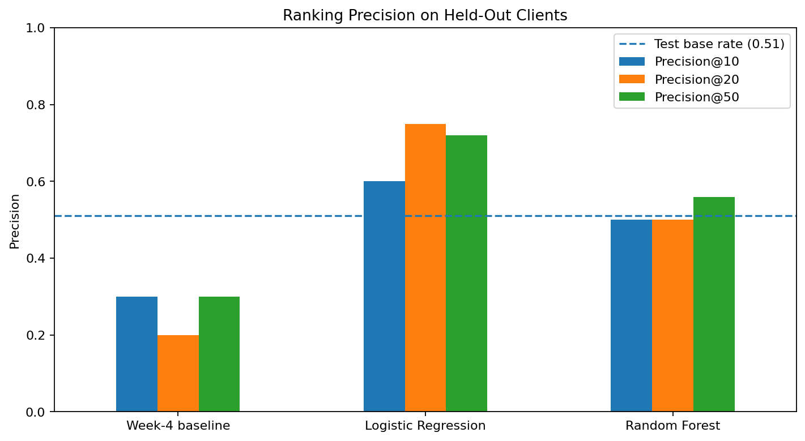
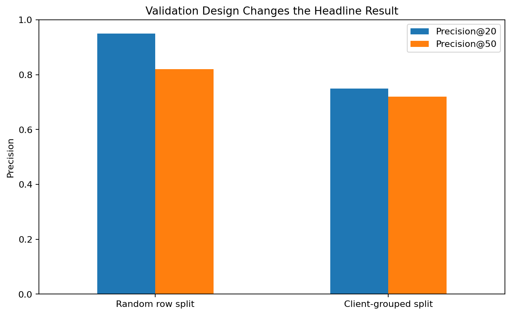
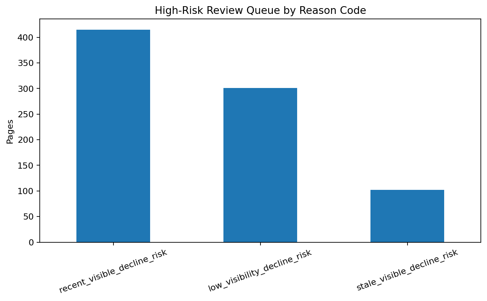

From thousands of pages to a smaller review queue
Content teams may have thousands of existing webpages but limited time to decide which ones deserve review first.
I studied whether search-performance and content signals could rank webpages associated with an observed decline proxy more effectively near the top of a review queue than a simple hand-written refresh rule.
The project combined an initial warehouse data contract with a 30,000-page anonymized modeling dataset, a transparent stale-and-visible baseline, Logistic Regression, Random Forest, client-grouped validation, and deliberate leakage tests.
On held-out client groups, Logistic Regression reached 0.75 Precision@20 and 0.72 Precision@50, compared with 0.20 and 0.30 for the frozen rule baseline on the same test population.
The resulting system is intended as decision support for prioritizing human content review, not as evidence that refreshing a recommended page will cause search performance to improve.
The problem is prioritization, not prediction for its own sake
A content team may have far more existing webpages than it can manually inspect. A yes/no model for whether every page is declining is therefore less useful than a ranked shortlist answering a practical question:
Can a learned model rank webpages associated with a decline proxy more effectively near the top of a limited review queue than a simple stale-and-visible rule?
I framed the task as ranking/scoring. Each page receives a priority score, and the highest-ranked pages are surfaced for human review.
The measurable target is a decline proxy based on the observed content trend label. Decline is not treated as proof that a page needs a refresh. It is a measurable signal used to identify pages that may deserve investigation.
Because review capacity is limited, the primary metric is Precision@K: the share of truly declining pages among the top K ranked recommendations.
Two data layers, used for different purposes
Warehouse data contract
The internship warehouse contains a much larger daily performance panel,
including fact_content_daily_performance, whose grain is:
During the data-contract stage, I inspected a March 2026 mid-panel partition containing 9,841,378 daily rows, 55 pseudonymized clients, and 331,437 content items.
This stage was used to verify grain, time windows, analytics availability, and the difference between observed zero values and unavailable data. It was not the final model-training table.
Final modeling dataset
The baseline, learned models, validation audit, and action playbook used the fixed anonymized starter dataset:
- 30,000 webpages
- 44 original columns
-
pseudonymized
content_idandclient_id - 90-day search, analytics, content, and metadata signals
After constructing the evaluation label, the modeling frame contained 45 columns. The learned models used a final set of 22 numeric features.
Label definition
The binary proxy target was:
-
1whentrend_direction == "down" -
0otherwise
The overall dataset contained 16,262 declining pages, giving an overall decline rate of approximately 54.2%.
What was excluded
The model excludes fields that reveal the target, recreate the target window too directly, or act only as identifiers:
trend_directiontrend_pctdeclining_label- direct last-30-day versus previous-30-day fields
client_idas a predictive featurecontent_idas a predictive feature
The broader warehouse was used for data-contract and temporal reasoning. The final baseline and learned models were trained on the 30,000-page anonymized starter dataset, not the full warehouse.
Start simple, then make the validation harder
Baseline
Before training a learned model, I created a transparent stale-and-visible rule.
A page qualifies when:
-
days_since_last_update >= 90 -
impressions_90d >= 731
Qualifying pages are then ranked by their 90-day impression count. This gives the learned model a simple benchmark that is easy to explain and reproduce.
Learned models
I trained:
- Logistic Regression as a simple and interpretable learned model.
- Random Forest as a nonlinear model capable of capturing more complex interactions.
Predicted decline probabilities from each classifier became ranking scores. This keeps evaluation aligned with the real task: prioritizing the top of a human-review queue.
Client-grouped validation
Randomly splitting webpages could place pages from the same client in both training and testing. Those pages may share audience, content strategy, measurement patterns, or other characteristics.
The primary evaluation therefore holds out entire clients:
- 23,837 training pages from 25 clients
- 6,163 test pages from 7 clients
- 0 overlapping clients
- test decline base rate of approximately 51.1%
Leakage audit
I deliberately added trend_pct, a feature directly related
to how the decline target is constructed.
Precision@50 immediately increased from 0.72 to 1.00.
Logistic Regression produced the strongest held-out ranking
| Method | Precision@10 | Precision@20 | Precision@50 | Test base rate |
|---|---|---|---|---|
| Stale-and-visible baseline | 0.30 | 0.20 | 0.30 | 0.511 |
| Logistic Regression | 0.60 | 0.75 | 0.72 | 0.511 |
| Random Forest | 0.50 | 0.50 | 0.56 | 0.511 |
At Precision@20 of 0.75, 15 of the model's top 20 ranked pages belonged to the observed decline class.
At Precision@50 of 0.72, 36 of the top 50 ranked pages belonged to that class.
The frozen rule baseline reached only 0.20 and 0.30 at the same cutoffs on the same held-out test population.

Figure 1. Logistic Regression produced the strongest ranking near the top of the held-out client queue. The more complex Random Forest did not outperform it.
Validation design changed the headline result
Logistic Regression achieved 0.82 Precision@50 under a random row split but 0.72 under the client-grouped split.
I retain the lower grouped result because it evaluates pages belonging to clients the model never saw during training.

Figure 2. Random row splitting produced a more optimistic result. The grouped result is used for the final claim because test clients were entirely unseen during training.
What these results do — and do not — support
Decline is a proxy
The label measures observed decline, not whether a webpage objectively requires refreshing.
A page can decline because of seasonality, lower search demand, competition, SERP changes, technical changes, cannibalization, or intentional targeting decisions.
Refresh impact was not experimentally measured
Pages were not randomly assigned to refresh and no-refresh conditions. This work therefore cannot establish that refreshing a recommended page will cause impressions, clicks, rankings, or traffic to improve.
The final model used the 30,000-page starter slice
The much larger internship warehouse informed data-contract and time-window decisions, but the final baseline and model comparison used the fixed 30,000-page anonymized modeling dataset.
The grouped holdout is stronger, but not final proof
Holding out entire clients reduces the risk of overly optimistic same-client evaluation. However, the reported result is still based on one grouped holdout rather than repeated GroupKFold or a prospective production test.
Model coefficients are not causal effects
Search, traffic, content, and engagement features can be correlated. Logistic Regression coefficients describe model behavior conditional on other included variables. They do not show that changing a feature will cause decline or recovery.
Human review is still required
Earlier error analysis found both high-confidence false positives and high-confidence false negatives. A high score should therefore trigger investigation rather than automatic content modification.
Turn model scores into actions a reviewer can understand
The final Logistic Regression probabilities were converted into a ranked review queue. Pages with predicted decline probability of at least 0.70 were treated as high-risk for playbook routing.
The held-out queue contained 818 high-risk pages.
stale_visible_decline_risk
Review for refresh
102 pages
High modeled decline risk, meaningful current visibility, and at least 90 days since the last update.
Review content accuracy, dated material, missing coverage, intent, and competition before deciding whether to refresh.
recent_visible_decline_risk
Investigate decline
415 pages
High modeled decline risk and meaningful visibility, but the page was updated relatively recently.
Investigate demand, rankings, competitors, intent, technical changes, or cannibalization rather than assuming another refresh is needed.
low_visibility_decline_risk
Review if strategically important
301 pages
High modeled decline risk but relatively little current visibility.
Consider business importance and expected value before committing editorial effort.
monitor
No immediate intervention
Lower-risk pages remain part of the ranked inventory.
They should not receive an automatic refresh recommendation solely because they appear in the model output.

Figure 3. Most high-risk pages are not simply stale. The playbook separates recently updated visible declines, stale visible pages, and low-visibility cases into different review actions.
Model ranks → human investigates → human decides → outcome is monitored.
The system should not automatically rewrite, publish, delete, merge, redirect, or otherwise modify content.
The reported result can be traced back to the notebooks
The complete analysis lives in the public GitHub repository:
github.com/aliakhtar1010/search-ranking-ml
The modeling pipeline uses random_state=42. The notebooks
record the feature set, data exclusions, baseline thresholds,
train/test grouping, model parameters, validation metrics, leakage
audit, and final action-playbook logic.
Ranked queue CSV files are regenerated by the notebook and kept outside Git where required by the repository's data guard. Public-safe metrics receipts and reusable figures are retained for reproducibility.
Data source and internship context
This project was completed as part of the FlyRank AI Machine Learning Internship.
Built on the FlyRank ML Internship dataset .
The analysis uses anonymized and pseudonymized internship data. No client names, raw client URLs, private search queries, access tokens, or other identifying client information are included in this public artifact.